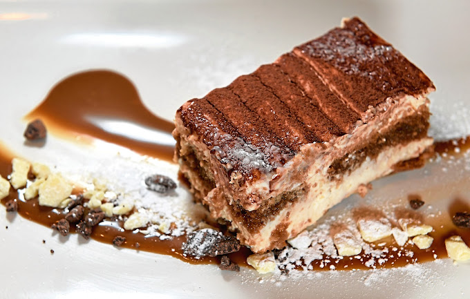
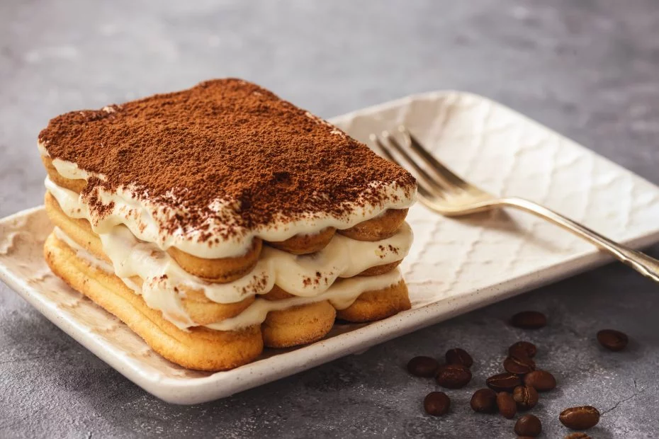
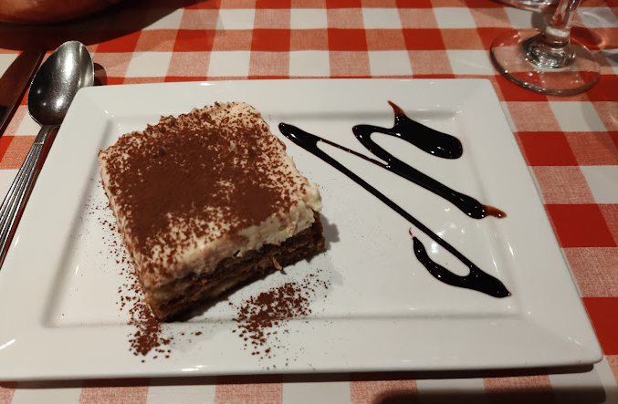

The following places serve Tiramisù:
Aperitivo Italian Restaurant Aberdeen
15 Bon-Accord St, Aberdeen AB11 6EA

"Lovely setting, staff were very efficient and friendly. Food was exceptional and presentation was excellent! My favourite Italian to go back to again and again!"
Mi Amore
80-82 Huntly St

"Great Italian restaurant with classic authentic, delicious food.
Even the dessert was amazing. Would 100% recommend Mi Amore for lovers of Italian cuisine. A hidden Gem."
Rustico
62 Union Row

"We ate dinner at Rustico during our weekend in Aberdeen and were super impressed by the quality of the food! Delicious starters and cooked-to-perfection mains with fresh ingredients. The staff was very welcoming and kind. The bonus is that the restaurant is dog friendly! 🐕 Will definitely come back to this hidden gem."